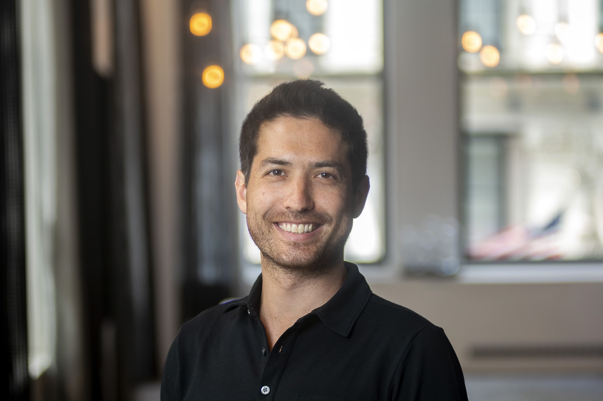

I am an associate research scientist in the Center for Computational Neuroscience at the 
Flatiron Institute. Previously, I held postdoctoral fellowships in the Faculty of Electrical 
Engineering at the Technion and in the Division of Applied Mathematics at Brown University. I 
received my Ph.D. in Mathematics from the University of California, San Diego.